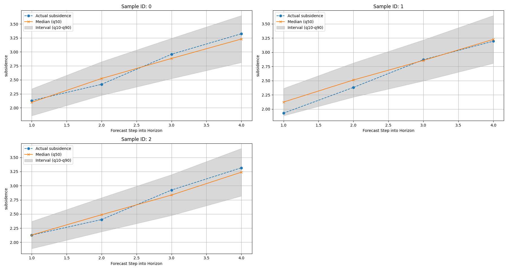
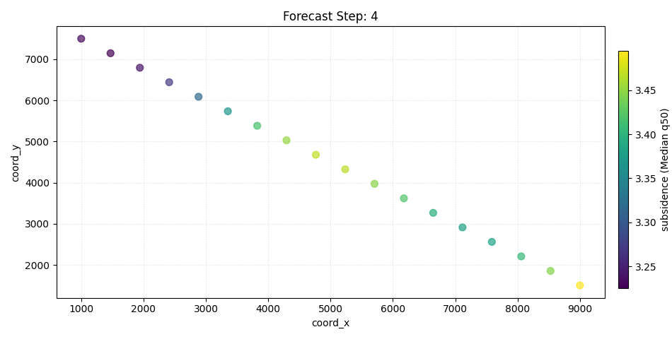

Note
Go to the end to download the full example code.
Forecast quick-look with plot_forecasts#
This lesson introduces the first forecasting visualizer
most users should learn in GeoPrior: geoprior.plot.plot_forecasts().
Why start here?#
Many forecasting workflows produce a rich prediction table, but users often need a very fast way to answer simple questions first:
What does one sample’s forecast look like through the horizon?
Do the predictive intervals widen with lead time?
How far are the predictions from the held-out actual values?
What does one forecast step look like in space?
That is exactly what plot_forecasts is built for.
It works from a long-format forecast table and supports two complementary views:
temporal view: inspect one or more sample trajectories across forecast steps;
spatial view: inspect one forecast horizon as a map-like scatter plot.
What the function expects#
The plotting backend expects a forecast table with at least:
sample_idx: identifies each forecasted sample;forecast_step: identifies the lead time / horizon step;one or more forecast columns such as
subsidence_predorsubsidence_q50.
If actual values are available, the table can also include
subsidence_actual so the viewer can compare prediction and truth.
If spatial plotting is desired, the table should additionally contain
coordinate columns such as coord_x and coord_y.
This is the native contract described by the function itself:
a long-format DataFrame with sample_idx and forecast_step,
plus prediction columns and optional actual/spatial columns. The
function supports temporal line views and spatial scatter views from
that same table.
What this lesson teaches#
This page is organized as a practical reading guide.
We will:
build a compact synthetic long-format forecast table,
inspect its structure,
render a temporal forecast view,
render a spatial forecast view for a chosen horizon step,
explain how to read each type of panel.
The lesson deliberately uses synthetic data so the page is fully executable during the documentation build.
Imports#
We use the real plotting backend from the public plotting API.
from __future__ import annotations
import numpy as np
import pandas as pd
from geoprior.plot import plot_forecasts
Step 1 - Build a compact long-format forecast table#
plot_forecasts is designed around a long-format DataFrame.
Each row corresponds to:
one sample,
one forecast step,
one set of forecast values for that step.
We create a synthetic forecast table with:
sample_idxforecast_stepspatial coordinates
coord_xandcoord_yquantile forecasts:
subsidence_q10,subsidence_q50,subsidence_q90held-out actuals:
subsidence_actual
The synthetic values are shaped so they remain easy to interpret:
subsidence generally rises with forecast step,
uncertainty widens slightly at longer horizons,
actual values stay close to the median forecast but are not identical.
rng = np.random.default_rng(42)
n_samples = 18
horizon = 4
x_vals = np.linspace(1000.0, 9000.0, n_samples)
y_vals = np.linspace(1500.0, 7500.0, n_samples)
rows: list[dict[str, float | int]] = []
for sample_idx in range(n_samples):
x = float(x_vals[sample_idx])
y = float(y_vals[::-1][sample_idx])
# sample-specific spatial baseline
spatial_effect = (
0.55 * (x / x_vals.max())
+ 0.35 * (y / y_vals.max())
)
for step in range(1, horizon + 1):
lead_effect = 0.42 * step
nonlinear = 0.08 * np.sin(sample_idx / 2.0 + step)
median = 1.2 + spatial_effect + lead_effect + nonlinear
# uncertainty widens with lead time
half_width = 0.18 + 0.06 * step
q10 = median - half_width
q90 = median + half_width
actual = median + rng.normal(0.0, 0.10)
rows.append(
{
"sample_idx": sample_idx,
"forecast_step": step,
"coord_x": x,
"coord_y": y,
"subsidence_q10": q10,
"subsidence_q50": median,
"subsidence_q90": q90,
"subsidence_actual": actual,
}
)
forecast_df = pd.DataFrame(rows)
print("Forecast table shape:", forecast_df.shape)
print("")
print(forecast_df.head(10).to_string(index=False))
Forecast table shape: (72, 8)
sample_idx forecast_step coord_x coord_y subsidence_q10 subsidence_q50 subsidence_q90 subsidence_actual
0 1 1000.000000 7500.000000 1.858429 2.098429 2.338429 2.128900
0 2 1000.000000 7500.000000 2.223855 2.523855 2.823855 2.419856
0 3 1000.000000 7500.000000 2.522401 2.882401 3.242401 2.957446
0 4 1000.000000 7500.000000 2.810567 3.230567 3.650567 3.324623
1 1 1470.588235 7147.058824 1.883198 2.123198 2.363198 1.928095
1 2 1470.588235 7147.058824 2.211276 2.511276 2.811276 2.381059
1 3 1470.588235 7147.058824 2.495336 2.855336 3.215336 2.868120
1 4 1470.588235 7147.058824 2.805196 3.225196 3.645196 3.193572
2 1 1941.176471 6794.117647 1.888430 2.128430 2.368430 2.126750
2 2 1941.176471 6794.117647 2.186976 2.486976 2.786976 2.401671
Step 2 - Understand the table before plotting#
Before calling the viewer, it helps to inspect the structure.
A good quick sanity check is:
one unique row per
(sample_idx, forecast_step),forecast steps increasing from 1 to the horizon,
quantile columns ordered from lower to median to upper,
actual values available if you want visual comparison.
summary = (
forecast_df.groupby("forecast_step")
.agg(
n_rows=("sample_idx", "size"),
q10_mean=("subsidence_q10", "mean"),
q50_mean=("subsidence_q50", "mean"),
q90_mean=("subsidence_q90", "mean"),
actual_mean=("subsidence_actual", "mean"),
)
.reset_index()
)
print("")
print("Step summary")
print(summary.to_string(index=False))
Step summary
forecast_step n_rows q10_mean q50_mean q90_mean actual_mean
1 18 1.910639 2.150639 2.390639 2.137516
2 18 2.256138 2.556138 2.856138 2.539409
3 18 2.601102 2.961102 3.321102 2.986040
4 18 2.959354 3.379354 3.799354 3.393154
Step 3 - Temporal forecast view#
The first and most important use of plot_forecasts is the
temporal view.
Here the function selects one or more samples and plots how the target evolves across forecast steps.
We pass:
target_name="subsidence"quantiles=[0.1, 0.5, 0.9]kind="temporal"sample_ids="first_n"withnum_samples=3
This tells the plotting function to show the first three sample trajectories and to interpret the columns as quantile forecasts.
The function is documented to accept long-format forecasts with
sample_idx and forecast_step and to produce temporal line
plots for individual samples/items.
plot_forecasts(
forecast_df=forecast_df,
target_name="subsidence",
quantiles=[0.1, 0.5, 0.9],
kind="temporal",
sample_ids="first_n",
num_samples=3,
max_cols=2,
figsize=(9.0, 4.8),
show_grid=True,
grid_props={"linestyle": ":", "alpha": 0.7},
show=True,
verbose=0,
)

How to read the temporal view#
The temporal panels should be read in layers.
First layer: the median path#
The median forecast (typically the q50 line) is the central
scenario. This is the line you should read first.
It tells you:
whether the model expects the target to rise or fall,
how quickly the change happens across the horizon,
whether different samples behave similarly or not.
Second layer: the interval width#
The spread between the lower and upper quantiles shows forecast uncertainty.
In many forecasting systems, wider intervals at later steps are expected because the model becomes less certain further into the future.
Third layer: actual-versus-predicted agreement#
When actual values are available, compare them against the median path and the interval band.
A good quick-look interpretation is:
best: actual values stay close to the median and inside the interval;
acceptable: actual values drift from the median but remain mostly within the interval;
warning sign: actual values repeatedly sit outside the interval or show a different directional trend.
This is why plot_forecasts is such a strong first diagnostic:
it does not replace formal metrics, but it quickly reveals whether
the forecast trajectories are visually plausible.
Step 4 - Spatial forecast view for one horizon step#
The same function also supports a spatial quick-look.
In that mode, we choose one forecast step and inspect the target
across space using coord_x and coord_y.
This is useful when the forecast table already contains spatial coordinates. The function documentation explicitly notes that spatial scatter plots are supported when spatial columns are provided.
Here we inspect horizon step 4. This gives a map-like snapshot of the late-horizon forecast field.
plot_forecasts(
forecast_df=forecast_df,
target_name="subsidence",
quantiles=[0.1, 0.5, 0.9],
kind="spatial",
horizon_steps=4,
spatial_cols=["coord_x", "coord_y"],
max_cols=2,
cbar="uniform",
figsize=(9.5, 4.8),
show_grid=True,
grid_props={"linestyle": ":", "alpha": 0.4},
show=True,
verbose=0,
)

How to read the spatial view#
The spatial view answers a different question from the temporal one.
Instead of asking:
How does one sample evolve through time?
it asks:
What does one forecast step look like across space?
The most useful reading order is:
identify the overall spatial gradient,
compare the median forecast with the actual field,
compare lower and upper quantiles to understand the local spread.
What to look for#
In a forecast map, focus on:
high-value zones: where the model expects stronger response;
smoothness or discontinuity: whether the spatial field looks physically plausible;
actual-versus-forecast mismatch: whether important hotspots are missed or misplaced;
quantile spread: whether uncertain zones are also the zones with the strongest predicted signal.
In this synthetic example, the field was constructed with a gentle spatial gradient plus a lead-time effect, so the late-step panels should show a coherent, interpretable spatial pattern rather than random speckle.
Step 5 - Inspect uncertainty growth numerically#
A lesson page becomes stronger when the visual interpretation is paired with a small numerical check.
Since we built quantile forecasts, we can measure the mean interval width by forecast step:
This is not required by the plotting function, but it helps the reader connect the visual widening of intervals to a concrete number.
forecast_df["interval_width"] = (
forecast_df["subsidence_q90"] - forecast_df["subsidence_q10"]
)
width_summary = (
forecast_df.groupby("forecast_step")
.agg(
mean_interval_width=("interval_width", "mean"),
min_interval_width=("interval_width", "min"),
max_interval_width=("interval_width", "max"),
)
.reset_index()
)
print("")
print("Forecast interval width by step")
print(width_summary.to_string(index=False))
Forecast interval width by step
forecast_step mean_interval_width min_interval_width max_interval_width
1 0.48 0.48 0.48
2 0.60 0.60 0.60
3 0.72 0.72 0.72
4 0.84 0.84 0.84
Why this numerical check matters#
If the temporal panels look wider at later horizons, this table should confirm it. That gives the user two complementary ways to understand the same forecast behavior:
visually from the plotted bands,
numerically from the interval-width summary.
In a real workflow, this kind of small check is often useful before moving on to more formal uncertainty diagnostics.
Step 6 - Practical interpretation guide#
Here is the most important takeaway from this lesson.
Use plot_forecasts when you want a fast first reading of a
forecast table.
It is especially good for:
checking whether forecast trajectories are directionally sensible,
seeing whether predictive intervals widen with lead time,
comparing predicted and actual values at a glance,
inspecting one horizon step spatially before building more presentation-style maps.
What it is not for#
plot_forecasts is a quick-look viewer, not the final figure for
every forecasting story.
Once the basic forecast behavior looks reasonable, you will often move next to:
forecast_viewfor year-by-year spatial forecast grids,plot_eval_futurefor holdout-versus-future comparison,the uncertainty plotting functions for calibration and coverage.
So this lesson should be read as the entry point into the forecasting gallery.
Command-line and workflow note#
In practice, users usually call this viewer after Stage-4 inference has already produced a forecast table in long format.
The key habit to remember is:
inspect the table structure first,
use the temporal view to understand sample-wise behavior,
use the spatial view to understand horizon-wise structure,
only then move on to more specialized forecast diagnostics.
Total running time of the script: (0 minutes 0.918 seconds)